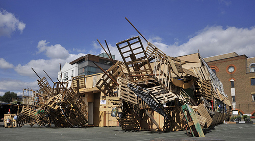

Monday, September the 20th, 2010
back to: title, date or indexes
D is a Date for your Diary
Mr Key is very pleased to announce that he will be reading a couple of (short) stories as part of a night of live radio art presented by the Resonance Radio Orchestra at the Jellyfish Theatre on Sunday the third of October. Tickets are just £5, and doors open at 7.30 PM.
The Jellyfish Theate is a temporary structure built of pallets and discarded doors and old nails. You can read about it here and find out where it is here.
